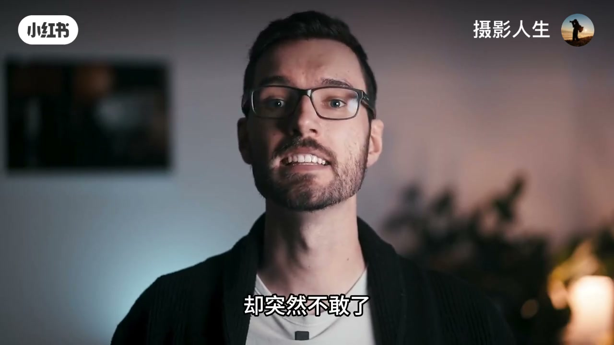
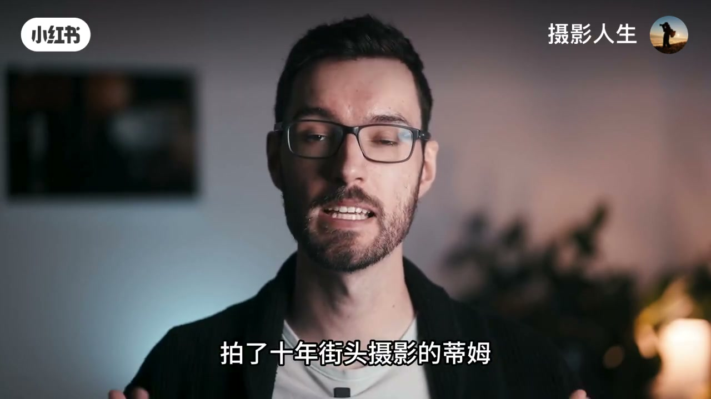
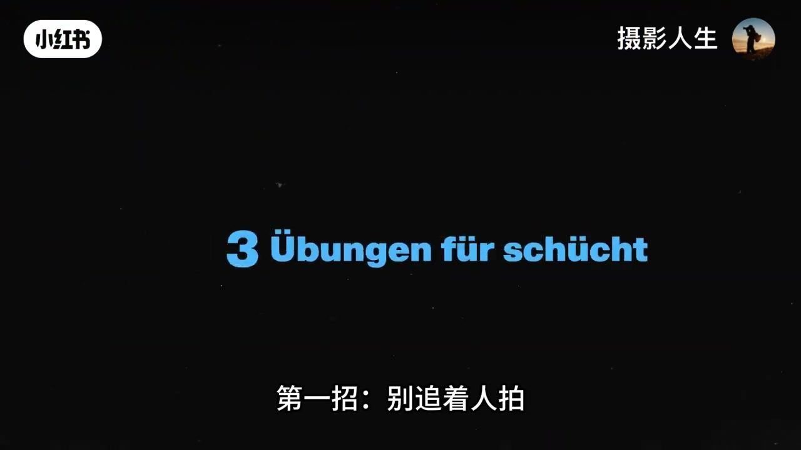
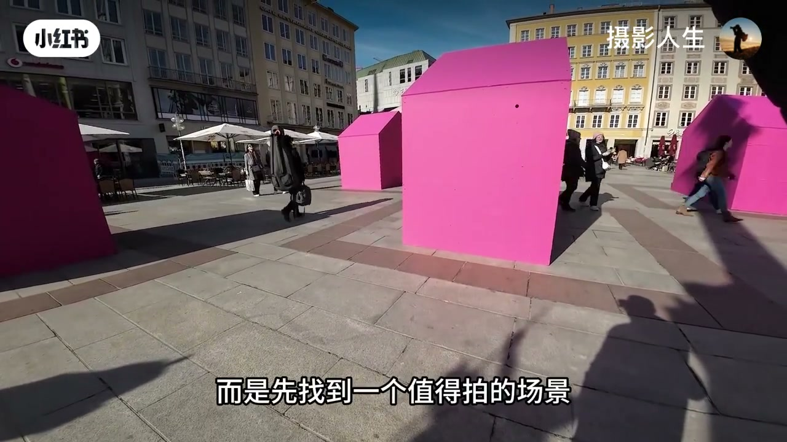
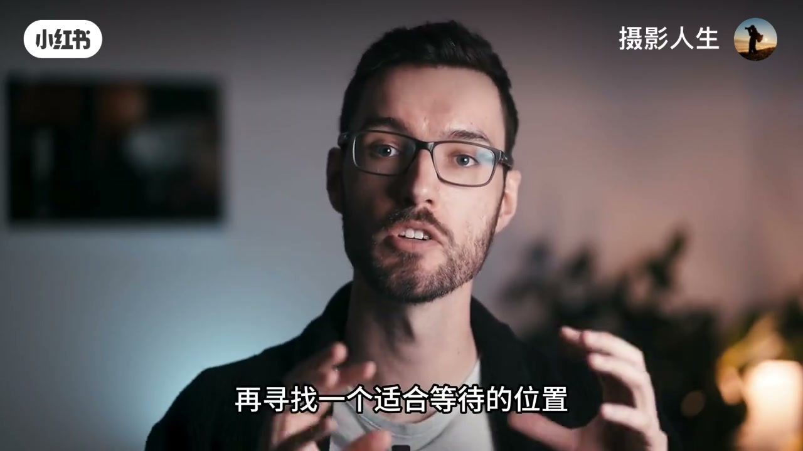
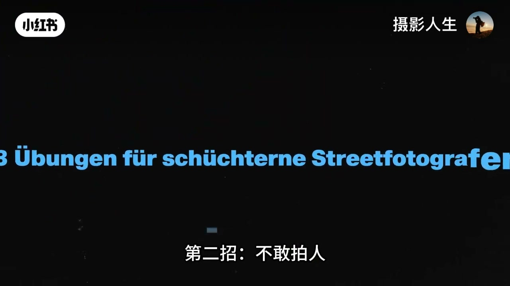
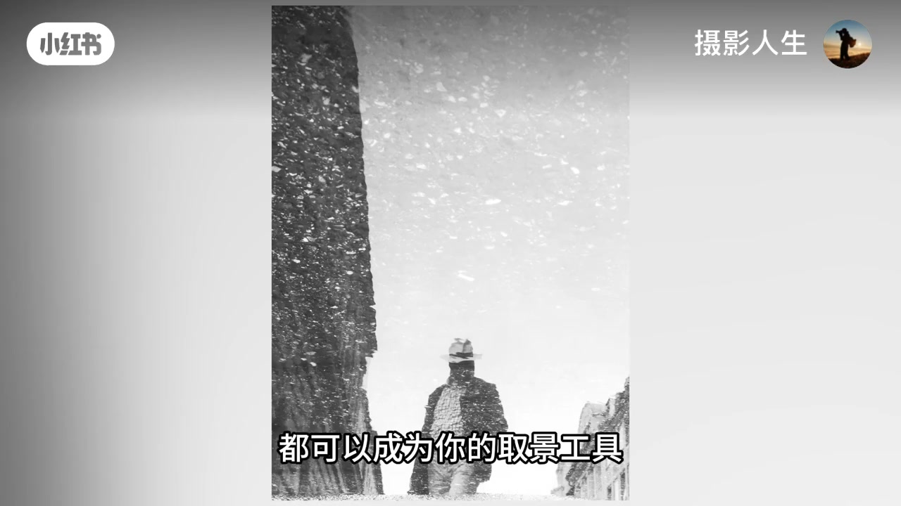
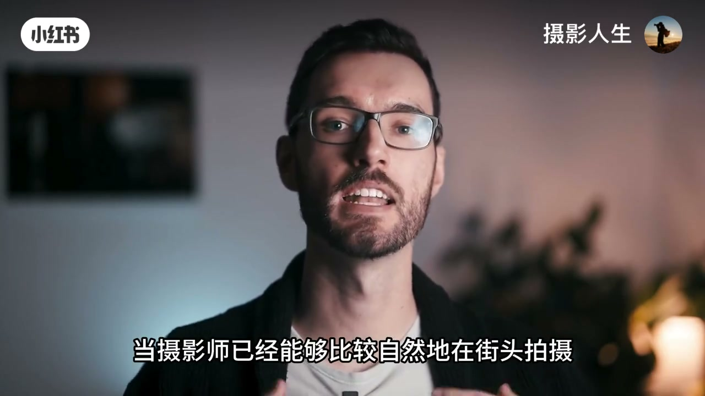
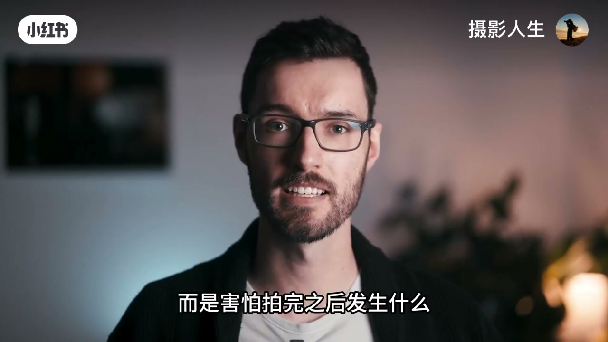
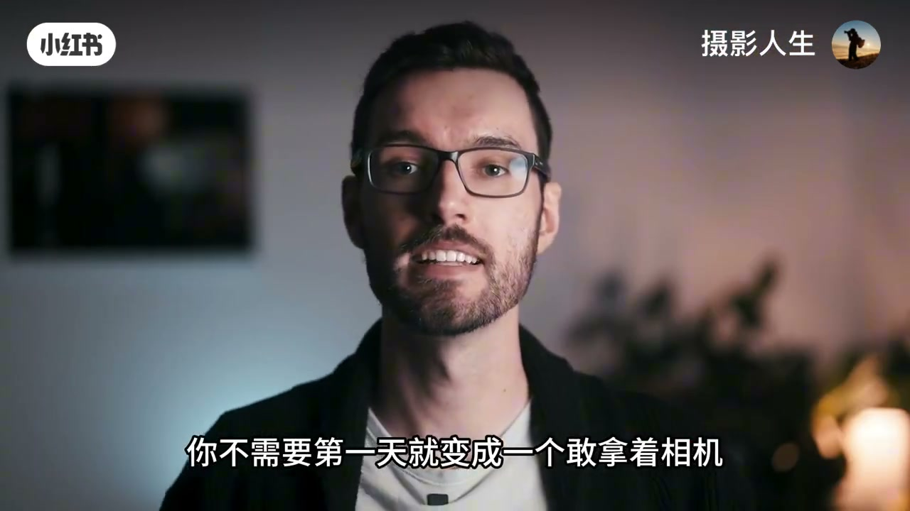

内容要点
账号「摄影人生」约七分钟转述拍了十年街头的蒂姆（ASR 作「地母」，按字幕/语境校正）。本条本地 Whisper 后半段几乎失效，正文以画面硬字幕 + 标题卡 + 可得口播重建，听不清处已标明。三招递进：渔夫式等人入画 → 先拍人的痕迹 → 与同伴同拍并守尊重。同主题另有旧链条目 street-photo-3-tips，本条为新短链 -2。
知识结构
[00:51→02:55]第一招·渔夫别追人；锁光线/结构/背景，等人入画。
总结降压顺序：等人入画 → 拍痕迹 → 结伴练习；真正对手常是恐惧而非路人。
00:00–00:51害怕的是脑内剧本
口播开场完整可辨：天气好、光线漂亮，却突然不敢——脑子先转「被发现/被质问/冲突怎么办」，结果一个人没拍就吓回家。蒂姆也经历过这阶段；很多人怕街头，并不是因为真发生过很多糟心事，而是行动前已把最坏结果预演完了。

[00:08] 开场：天气好光线美，却端起相机突然不敢拍陌生人
Opening: great light, yet you freeze before photographing strangers.

[00:26] 蒂姆也经历过这阶段：怕的是脑内最坏剧本，不是真实冲突统计
Tim also went through this: fear is often the worst-case script in your head.
约 00:30 后 ASR 大量乱码/重复；此后以画面字幕为准。
00:51–02:55第一招：别追着人拍（渔夫）
标题卡：「第一招：别追着人拍」。猎人式跟随目标对新手压力最大；渔夫先找值得拍的场景，定构图与曝光，只需要等一个合适的人自己走进画面。站稳后更容易融入环境；选位盯人流路径，等待不是发呆。

[00:55] 第一招片头：别追着人拍——三招给害羞街头摄影师的练习
Tip 1 card: don’t chase people—three drills for shy street photographers.

[01:30] 猎人对新手压力最大；渔夫先锁场景光线，等人自己走进画面
Hunter mode stresses beginners; angler locks scene/light and waits for people to enter.

[02:10] 等待不是发呆：观察人流从哪经过，必要时换站位
Waiting isn’t zoning out: watch foot traffic paths and relocate if needed.
02:55–04:36第二招：先拍人的痕迹
标题卡「Fokus auf Details / 就先拍人的痕迹」。街头不等于必须拍正脸：影子、倒影、遗落物、手部局部「都可能比一张普通的人像更有故事感」。同一场景可连拍后调整构图（画面出现 Lightroom 选片网格）。

[02:55] 第二招：先拍人的痕迹——影子、倒影、遗物与局部
Tip 2: shoot human traces first—shadows, reflections, leftovers, details.

[03:30] 倒影、手部与局部细节，往往比普通正脸人像更有故事感
Reflections and hand details can feel more story-rich than a plain face portrait.
04:36–07:20第三招：和同伴一起拍 + 收束
字幕强调「和朋友一起拍摄」：群体带来安全感，降低「拍完被质问」焦虑；维也纳扶梯段可见与同行讨论。但字幕也提醒：人不是「为了让摄影师拍出好照片而存在的道具」；不必第一天就做「冲到陌生人面前的摄影师」。

[05:00] 第三招：和同伴一起拍——群体安全感降低「拍完被质问」焦虑
Tip 3: shoot with companions—group safety lowers post-shot confrontation anxiety.

[06:00] 边界：安全感≠通行证；街上每个人是真人，不是出片道具
Boundary: safety ≠ free pass; people are humans, not props for good shots.

[06:40] 收束：用小胜利替换脑内恐惧；不必第一天就冲到陌生人面前
Close: replace imagined fear with small wins; don’t rush strangers on day one.